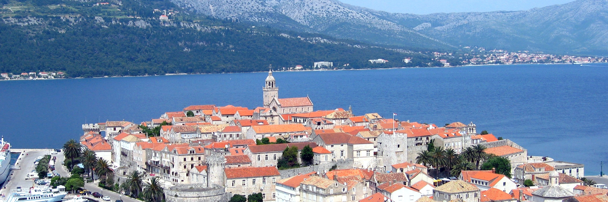

Bienvenue à Triskalya ha Plafälda !

Le mot du maire
Chères Triskalyennes, chers Triskalyens,
Suite à de nombreuses demandes de citoyens, nous avons décidé de traduire notre site Web en français. Cela permettra aux nouveaux arrivants de ne pas être déboussolés au moment d’effectuer leurs démarches. Ce site sera également une vitrine pour notre commune et pour ses nombreuses activités.
Située au croisement de la mer Bleue et des montagnes du Dalkitsk, la commune de Triskalya ha Plafälda s’étend sur 240 km² et abrite l’une des villes majeures du district de Plafälda et de la région de Filtanyë. Connue par le passé comme port de pêche, la ville vit aujourd’hui essentiellement de l’industrie du textile et elle exporte principalement vers la capitale, Isfalitë, et vers les autres villes d'Aglitanie.
Que vous soyez un nouveau résident souhaitant s’installer dans la commune ou un habitant de longue date, vous trouverez sur ce site Web l’ensemble des ressources nécessaires pour vivre à Triskalya. Cela va des renseignements sur les procédures administratives aux comptes-rendus du conseil communal, en passant par les événements organisés dans la ville et dans son district.
Je vous souhaite une bonne et agréable visite sur ce site, en espérant que vous y trouverez les informations qui vous seront utiles.
B. Halkyrti, maire de Triskalya ha Plafälda